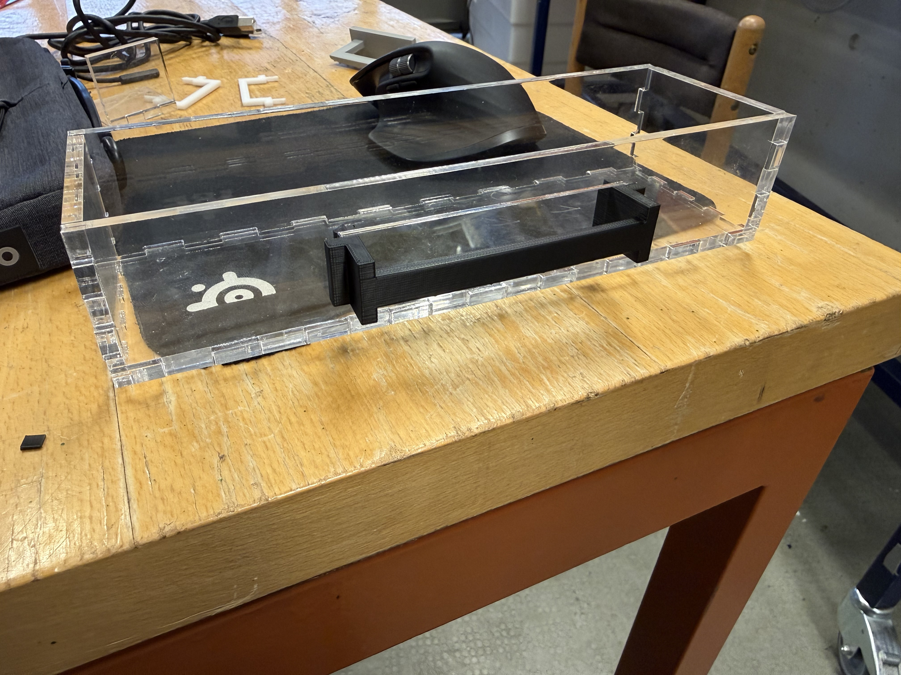
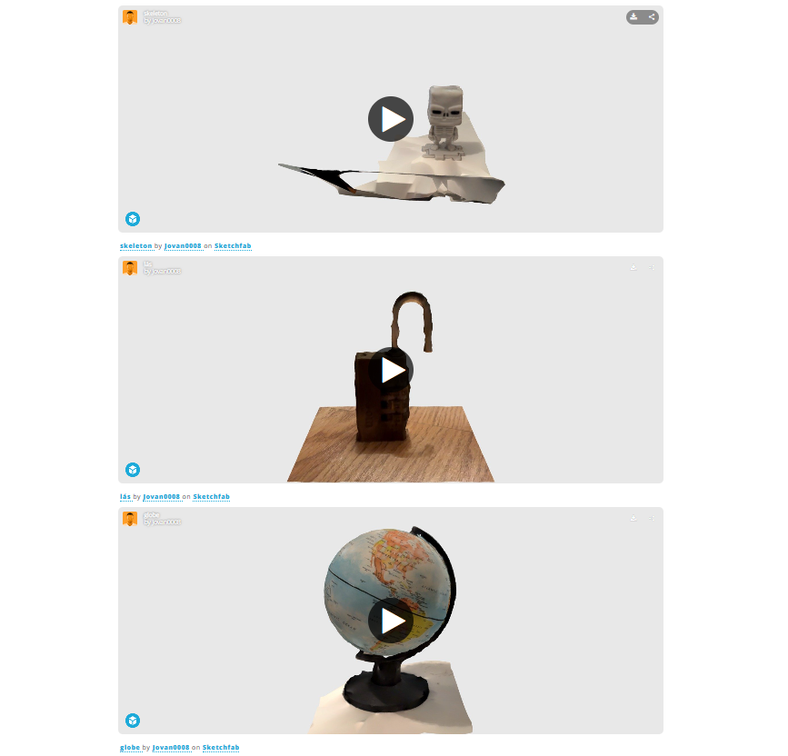
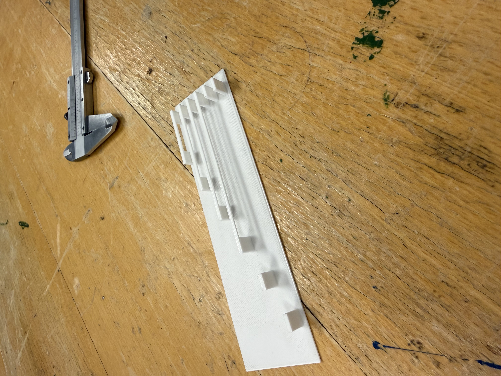
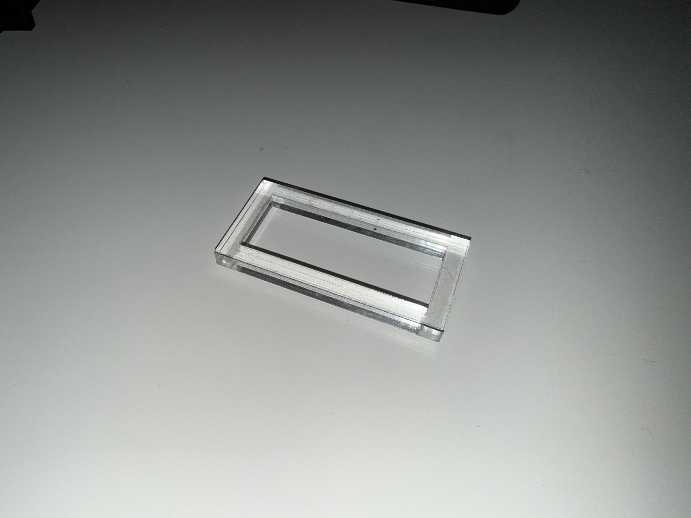
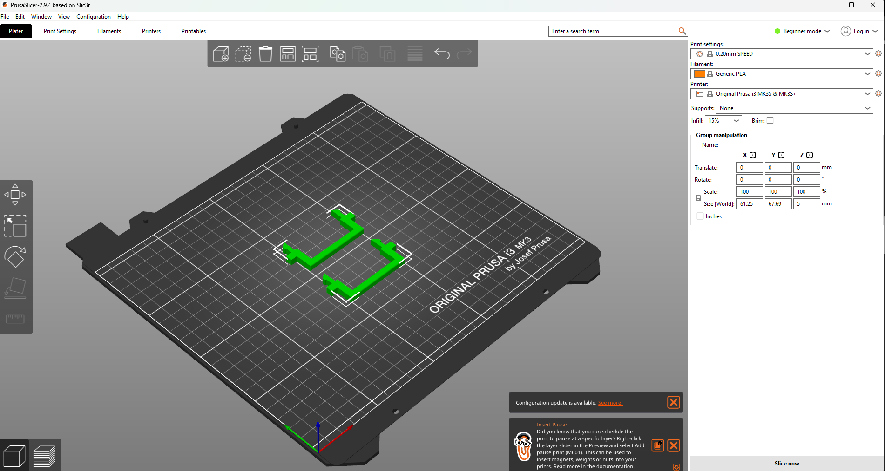
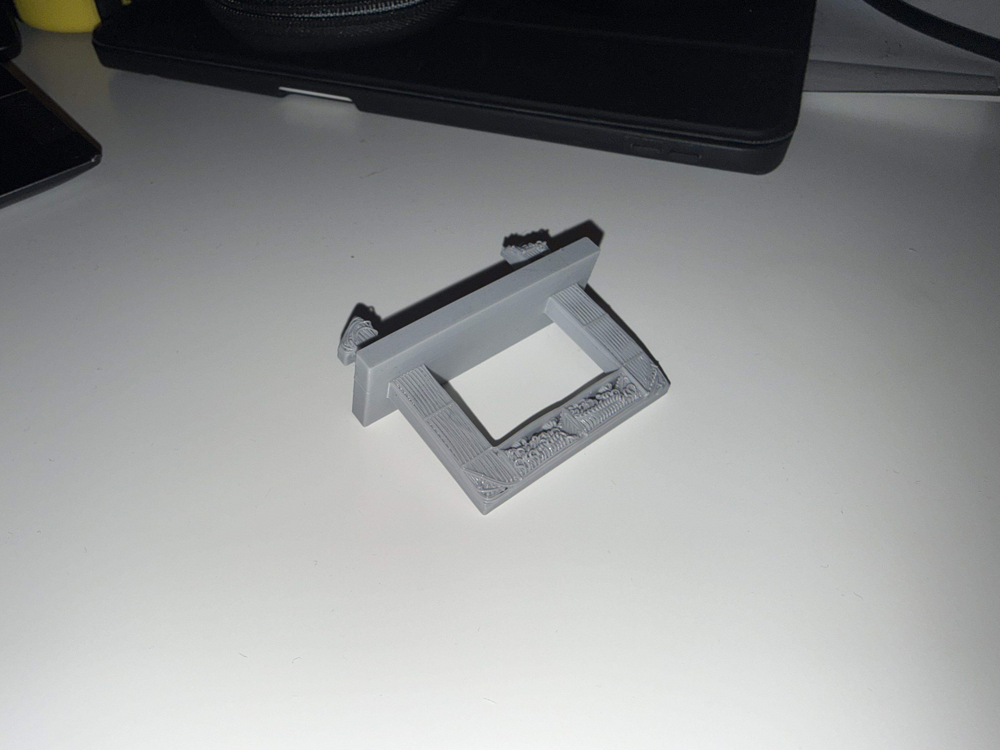
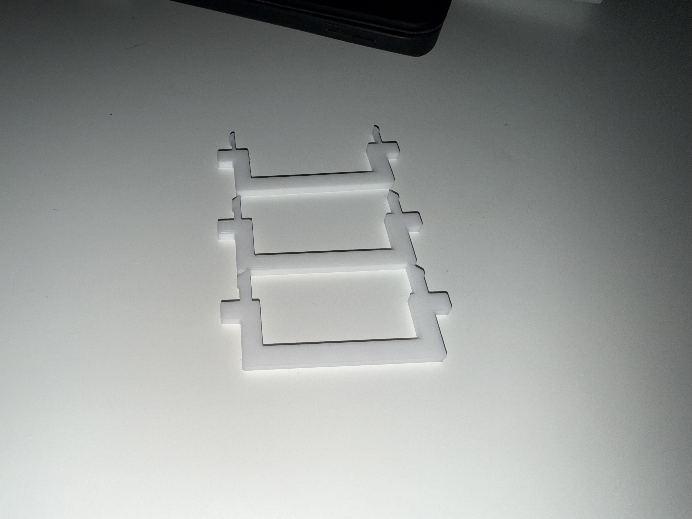
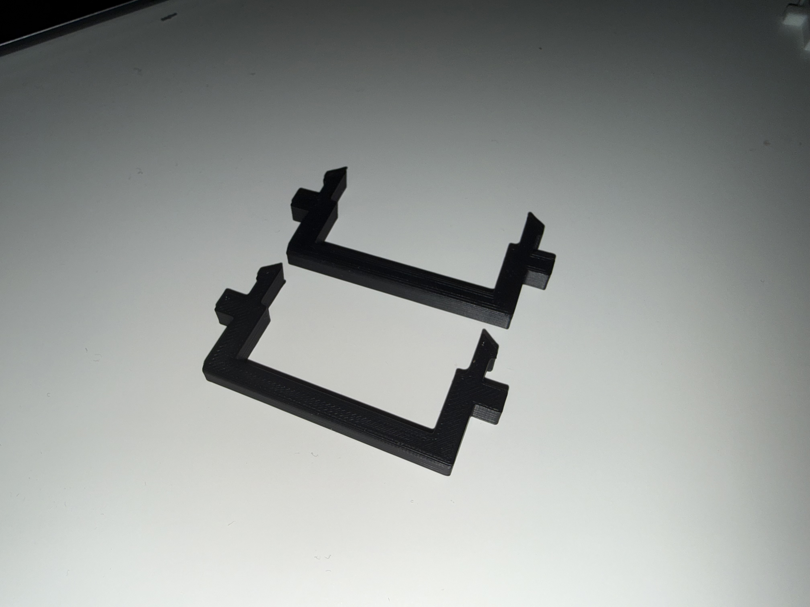
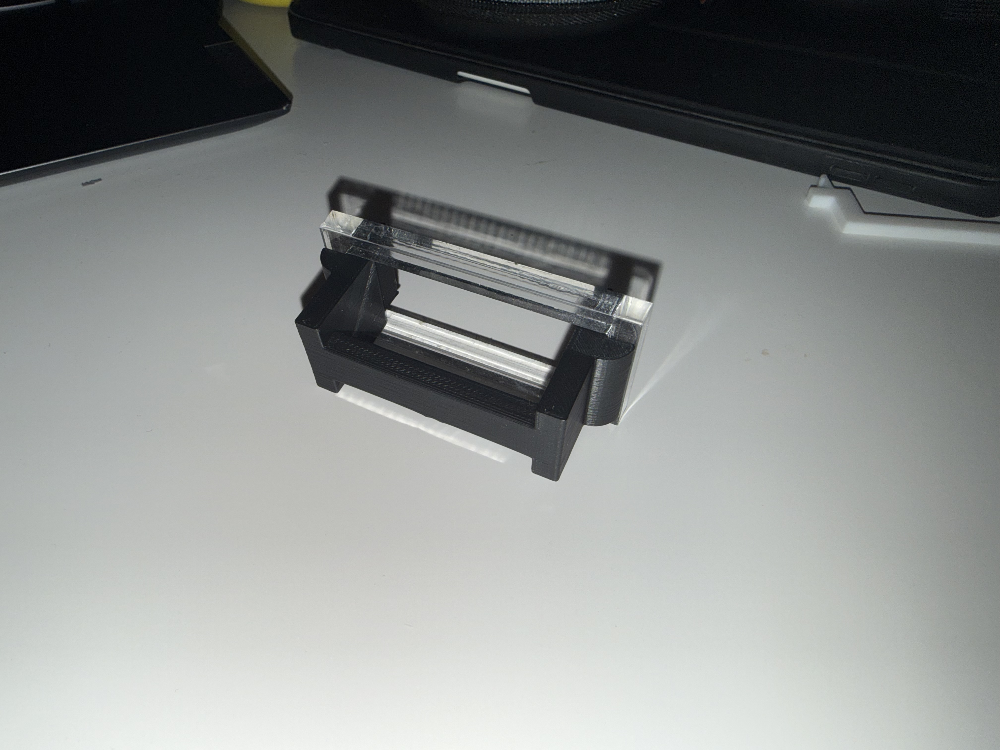
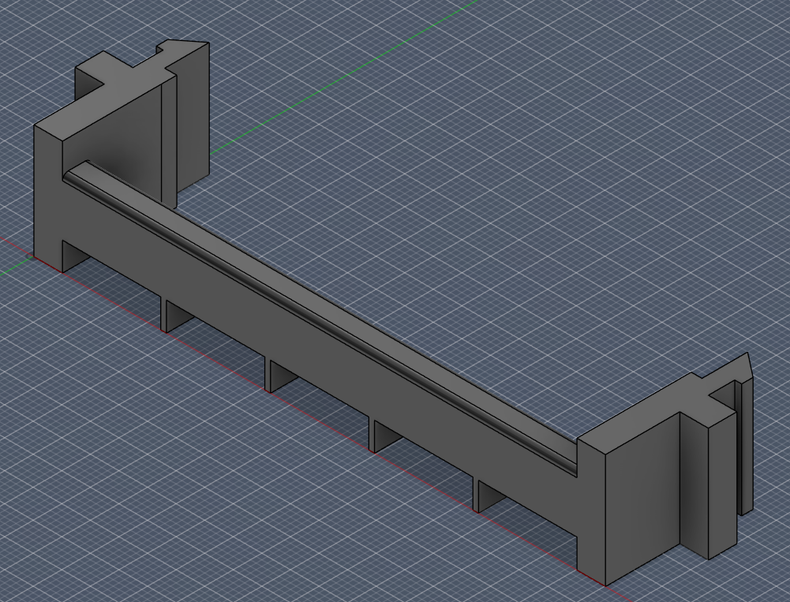

Verkefni 3
3D prentun og 3D skönnun
Lokaafurð
Hér má sjá lokaútkomuna úr verkefninu.


3D prentun
Undirbúningur
Eins og venjulega byrjaði ég að horfa á myndband um verkefnalýsinguna. Ég vissi strax að mig langaði að gera eitthvað hagnýtt, en ég sá möguleika á að samtvinna þetta við verkefni 2. Ég sá að skúffan væri smá óþæginleg að nota ef það er bara gat á henni svo ég ákvað að gera snap fit handfang til að opna hana á auðveldari máta.
Prófanir
Til að gera þetta að smá áskorun vildi ég prenta algjörlega án
support, en til þess þurfti ég að gera smá overhang test. Ég tók
eftir einu svoleiðis í skrifstofunni hjá Magga svo ég ákvað frekar
að skoða það vel heldur en að prenta það sama aftur.
       
Eftir að skoða þetta test í smá stund og mæla komst ég að því að
það er best að vera undir 30 mm lengd á overhang til að fá sterkt
prent, en það væri aðeins of stutt fyrir handfangið mitt, enda er
gatið 100mm breitt. Ég ákvað þó að leita mér að frekari
upplýsingum um þetta og fann
þessa mynd. Ég lærði slatta um almenna 3D prentun frá þessu en sérstaklega
það að prentarar ættu að geta höndlað allavega 20 mm brúun. Mér
fannst líka hugmyndin af brúm áhugaverð og ákvað að spyrja Magga
út í það. Hann mældi með allavega 0.8 mm þykkum brúm til að halda
stöðugleika og svo hægt sé að kippa þeim af eftirá. Ég gerði
slatta af prufum til að skoða þetta, fyrst og fremst skar ég út
lítinn akrýlramma sem var 50 mm breiður og 20 mm hár, sem sagt 50%
breidd af planaða módelinu, en þetta gerði ég til að geta prófað
festingarnar á prufunum.
Þar sem ég hafði enga reynslu á snap fit hlutum spurði ég
gervigreindina en hún var ekki mjög hjálpsöm og gaf mér skrítnar
tölur. Ég ákvað því að hanna þetta bara alveg sjálfur og prófa
fullt. Ég hlóð niður Prusa Slicer forritinu og horfði á
leiðbeiningarmyndand
um notkun þess. Það eina sem ég þurfti að gera var að velja réttan
prentara í forritinu og breyta infill í 15% ásamt efninu (PLA), en
restin var mjög einföld, bara draga 3mf skjal inn á prentsvæðið og
færa til. Síðan þurfti að exporta g-code í prentarann sjálfan og
þetta var komið.
Lærdómur
Ég lærði slatta í þessu verkefni. Það helsta er hversu mikilvægt það er að prófa hluti á smærri skala áður en farið er í fullbúið prent. Ég lærði á virkni 3D prentara, takmörkun þeirra og kosti miðað við subtractive framleiðslu.
3D skönnun
Undirbúningur
Ég byrjaði á að líta í kringum mig til þess að finna eitthvað sniðugt til að skanna. Það fyrsta sem blasti við mér voru fígúra, gamall lás og hnöttur. Ég fór næst í það að finna rétta forritið til þess að skanna með. Inni á heimasíðum fyrri nemenda sá ég að tvö smáforrit voru vinsælust, Polycam og Scaniverse. Ég náði í bæðu en var fljótur að hætta við Polycam þar sem það kostaði að nota appið og ég tresyti sjálfum mér ekki að slökkva á free trial á réttum tíma. Ég notaði því Scaniverse.
Framkvæmdin sjálf
Skönnunin var nokkuð einföld, ég valdi nýtt verkefni og ýtti á record takkann. Appið tók myndband af hlutnum, en ég átti að snúa símanum í allar mögulegar áttir til að ná öllum sjónarhornum. Í lokin mátti ég velja hvort myndbandið væri unnið með Lidar (innbyggt í símanum mínum) eða bara sem einstakar myndir sem settar væru saman. Hjá mér kom möguleiki 2 eiginlega alltaf betur út svo ég valdi hann. Til að sýna afurðina bjó ég til Sketchfab reikning, en hér fyrir neðan má sjá niðurstöðuna
Eins og sést komu skönnin misvel út, besta var hnötturinn. Það mætti bæta þetta með betri birtu og meira þolinmóðri framkvæmd.